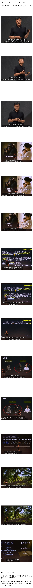

지구평평설이 더 신빙성 있어보인다 ㅅㅂ

지구평평설이 더 신빙성 있어보인다 ㅅㅂ
봉사하고 나누는 사회활동이나 열심히 하지 왜 과학영역에 깝죽대는거야
바보도 알 수 있게 진화 설명하는 방법
1. 자식은 부모를 닮는다.
2. 어떤 선천적 특징은 생존과 번식에 유리하다. (잘생겼다던지, 똑똑하다던지.)
이 둘에 동의하면 진화론을 믿는거임.
시원하게 그냥 존나 다남아있으면 편한디 씁박
혼자 즐기면 아무도 뭐라 안한다
남한테 알려주려하고 전도 하려하는 순간부턴 거부감 200퍼
원래 믿음의 눈을 뜨면 이성의 눈이 감김
둘은 같이 뜰 수 없음
종교는 아편이야.
뭐.. 무교인입장에서 보면 그냥 대꾸도 하고싶지않음... 근데 인간적으로 박진영은 참 존경한다. 나한테 전도만 안하면 되는거지뭐.. 기독교 교리가 전도가 좀 쎈편이라 ㅈ같긴한데. 그래도 마약하고 하는애들보단 낫다. 소속아티스트들 밥잘챙겨주고 건강신경써주고 선하고 바르게 살라고하는데 괜찮은어른이라고생각함. 강연도 기독교인들 모아다가 하는거겠지뭐. 왈가왈부 악플달지는말고 본인인생들이나 살자. 종교를 떠나서 사람들 욕하고 미워하고 사는건 악한일이다. 개인적으로 종교는 유교랑 불교가 참 좋은것같다. 자신스스로가 깨달음을 얻어 부처가 되어라. 얼마나 좋냐
개드립은 거의 대부분이 기독교를 부정하던데
예수의 존재 자체는 인정을 하는거임?
예수가 신이냐 아니냐와 별개로 예수는 있었지
예수라는 존재 자체는 그가 독생자건 뭐건 간에 역사적 사실임. 처녀 마리아가 성령으로 예수를 잉태했건, 마굿간 콜걸 마리아가 싸튀 당해서 예수를 잉태했건간에 예수라는 인물은 실존했음
기독교를 부정한다거나 예수의 존재를 믿지 않는다기보단 "일부" 예수쟁이들의 개소리나 헛짓거리가 싫은 거지. (무슨 일부가 그렇게 많은지는 모르겠지만 그래도 봉사활동 열심히 하면서 신실하게 신앙생활이랑 사회생활 잘 하는 사람들도 많으니)
그리고 그런 점들은 개드립 뿐만 아니라 다른데서도 많이 비판받는 내용이지.
진영이형은 거울을 보면 진화론을 믿을 수 밖에 없을텐데...
왜 갑자기 이렇게 된걸까
나름 공부좀 하고왔노 ㅋㅋㅋ
근데 난 신기한건 우리가 년도를 말할때 2026년이라고하는데 이것도 예수 탄생하고나서부터 2026년이 지난거고 주말도 종교적인 이유로 만들어진건데 이걸 다 부정하는건가?
예수쟁이란 참 다양히도 있구나